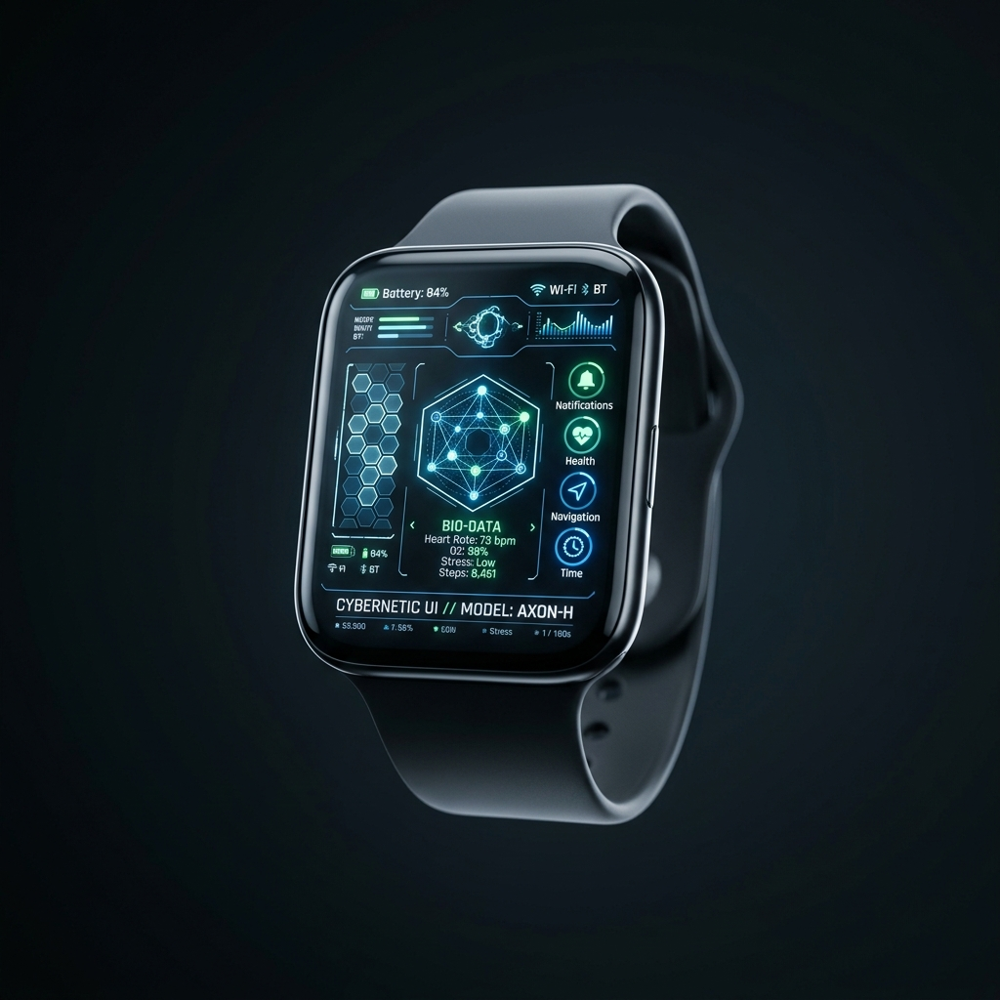
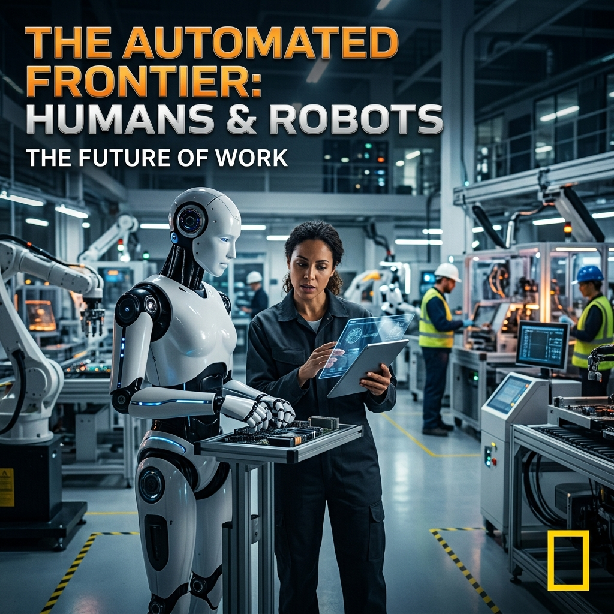
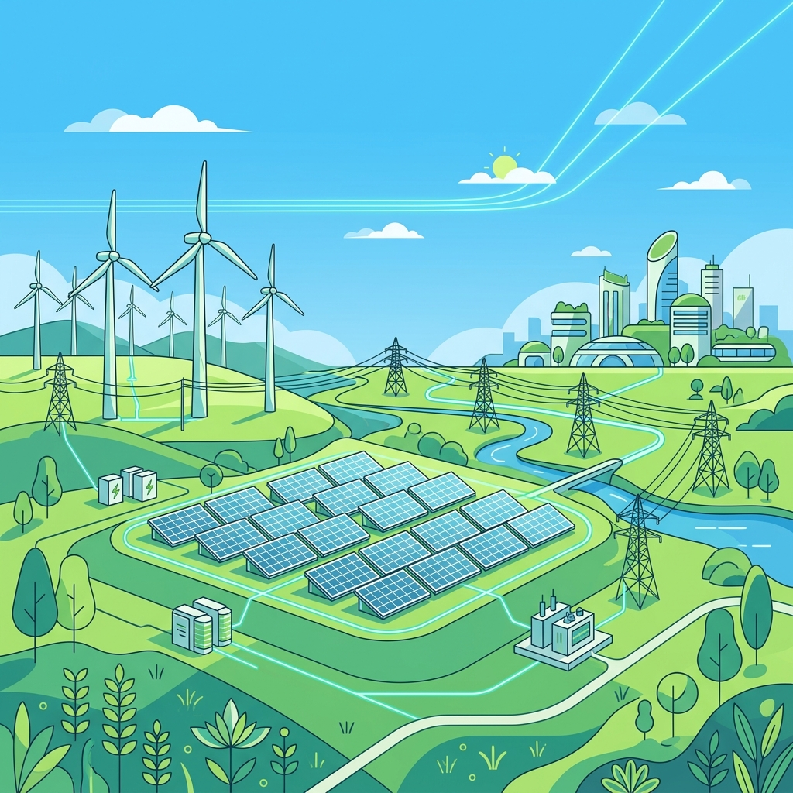

imageImage Context
imageImage Context
동대문디자인플라자 (DDP)
location_on서울 중구 을지로
세계 최대 규모의 3차원 비정형 건축물로, 혁신적인 미래형 우주선 디자인을 갖춘 서울의 랜드마크이자 글로벌 문화/예술/패션 허브입니다.
DeepMind Interaction Model
"Google DeepMind's new interaction paradigm proposes that mouse pointers should act as context-aware lenses. Instead of manually copying text or uploading images, the pointer itself senses the semantic boundary under it, interprets the content (multimodal visual-linguistic context), and projects intent-driven action widgets. By leveraging real-time vision-language models, the cursor dynamically morphs to indicate high-probability micro-actions, thereby bypassing traditional prompt engineering bar."
26°C
Partly Cloudy (Night)

shopping_bagProduct ContextNova Chronograph V2
$299.00A wearable luxury statement piece displaying real-time holographic schedules, atmospheric telemetry, and biometric sync using custom glass projection technology.

14:25 play_arrowVideo ContextHow Humanoid Robots Will Shape the Next Decade
TechHorizon AI • 1.2M views • 2 days ago

newspaperNews ContextGlobal Green Energy Transition Reaches Critical Milestone
Renewable energy installations have officially surpassed fossil fuel deployment in major grids for the first quarter, signaling a faster pivot than previously projected by models.